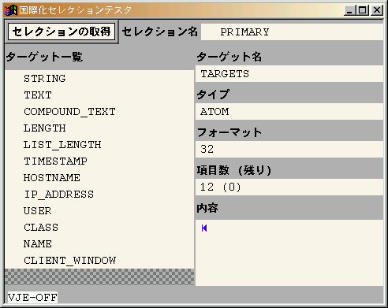
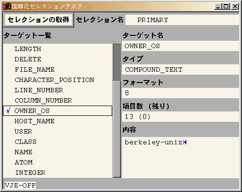
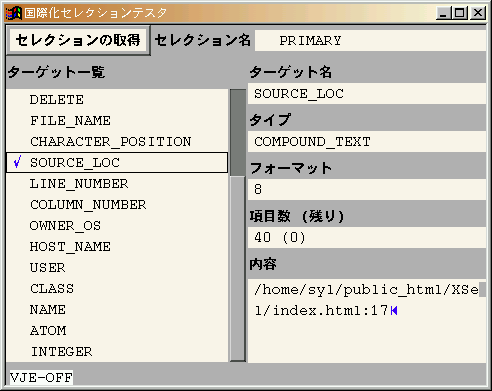
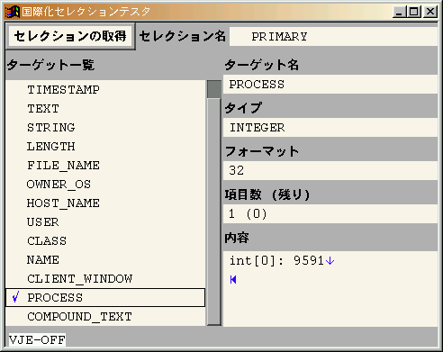

開発中のGUI部品である国際化TextArea, TextLine, Button, ListBox, Plateと垂直方向Scrollbarオブジェクト、およびレイアウトマネージャ、コントロールマネージャを利用した、実装例（実装テスト）としてのセレクションテスタ（セレクションの中身を検査するためのXクライアント）です。
| 2000-03-27 | xsel-20000327.tar.gzをリリース。このリリースもテストである。アイコンを用意した。editor-20000327から変更点をマージした。 |
| 1999-08-06 | xsel-19990806.tar.gzをリリース。このリリースもテストである。Button.cでXGrabPointer()のButtonMotionMaskを外した。 サーバとクライアントの間の接続が遅いときに、リストボックスのアイテム選択がうまくいかない不具合を修正。SolarisでコンパイルできるようにResource.cでMAXHOSTNAMELENを定義した。 |
| 1999-03-28 | xsel-19990328.tar.gzをリリース。このリリースはListBoxとTape、コントロールマネージャのテストであり、本来のテスタの機能しては十分でない。 |
X11R6の環境下で動作する本テスタの特徴は以下の通りです。
セレクションの内容がコンパウンドテキストの場合も正常に表示されます。
ターゲット一覧にあるターゲットはすべて取得可能であり、正常である。

ターゲットのうち、一部のものは実際には取得できないものがある。またCLASS, NAMEのタイプがINTEGERであったり、テキスト文字列以外への変換は正しくないようだ。

TIMESTAMP, NAME, ATOM, INTEGERは取得できない。そもそもATOMとINTEGERが、どのようなデータタイプへの変換を意図しようとしていたのかもわからない。そのほかのターゲットへの変換は正常のようだ。

ターゲット一覧にあるターゲットはすべて取得可能であり、正常である。

最新版はxsel-20000327.tar.gzです。動作確認したプラットフォームはFreeBSD 2.2.xだけですが、Solarisでも動くと思います。
tar ballを展開後、環境に合うようにImakefileを編集してください。アイコンウィンドウを用いる場合は、shape extentionとXpmライブラリを使用するので、Imakefileで次のように定義します。
#define ShapeIcon
あとはxmkmf -a ; makeで完了するはずです。
次のように起動します。
% setenv LANG ロケール名 % setenv XMODIFIERS @im=IMサーバ名 % xrdb -merge リソースファイル % xsel実際には次のようになります。
% setenv LANG ja_JP.EUC % setenv XMODIFIERS @im=vje % xrdb -merge XSel.ad % xsel
起動後、左上のボタンをクリックすると、セレクションの内容を取得して、提示されたターゲット一覧をすべて中央左のリストボックスに表示します。そのリストボックスの項目にあるターゲットをクリックすると、そのターゲットに変換されたセレクションの内容が中央右の各項目に表示されます。ウィンドウマネージャから「ウィンドウを閉じる」を選択すると終了します。
全リソース一覧を用意しておきました。
ボタンのラベル文字列を設定しないと実用的ではないでしょう。それ以外はデフォルトのまま使用しても問題ないでしょう。一応サンプルのリソースファイルを用意しておきました。
以下の課題がある。